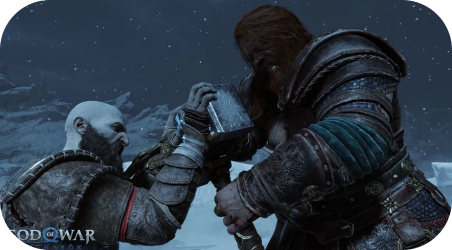
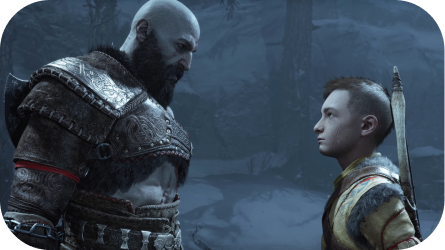
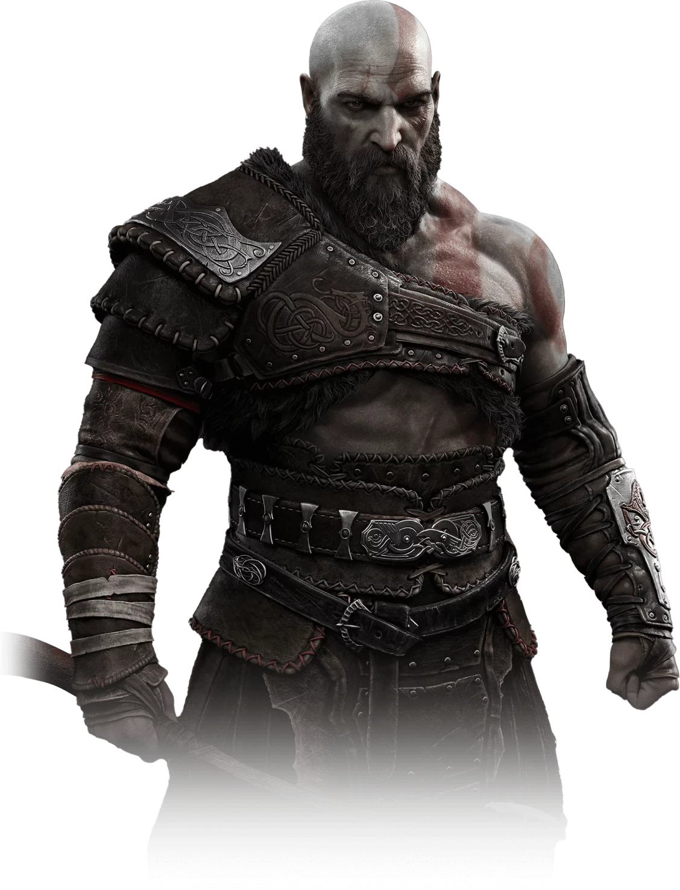

Kratos e Atreus estão de volta em uma épica aventura até o fim de tudo que conhecemos!
Enfrente Deuses, monstros e mortais aterrorizantes!
O Ragnarök está aqui, escolha entre sua segurança e a dos 9 reinos!
Tudo se une para forjar um épico de ação monumental que adiciona mais um marco impressionante ao cenário dos videogames.
 A escrita, as performances e a música são excepcionais, dando vida a esta tapeçaria nórdica expansiva - mas mesmo que segure seu coração em uma mão com sua história contada com elegância, está triturando
ossos na outra com um combate fantasticamente feroz.
Atreus busca o conhecimento para entender a profecia de "Loki" e definir o papel dele no Ragnarök. Kratos deve se desacorrentar do medo de repetir erros do passado para ser o pai que Atreus precisa.
Personagens
Kratos